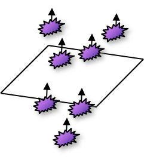
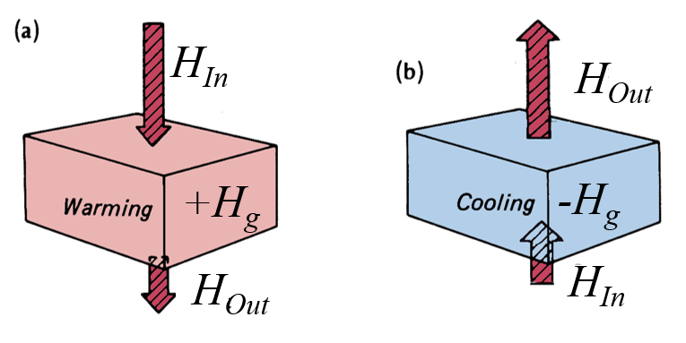
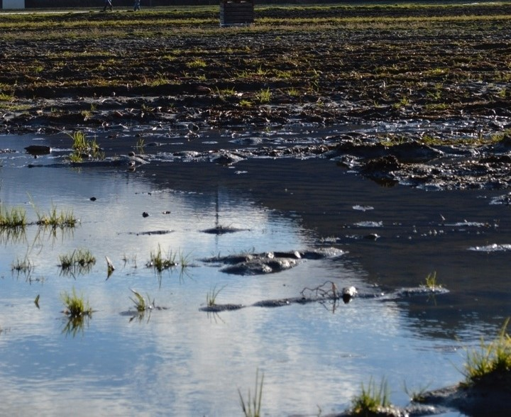

Heat and temperature
Distinct but related quantities that are easy to mix up
Learning Objectives
- Understand the linkage between temperature and life.
- Describe what determines the temperature response to an energy input.
- Explain why soils warm and cool differently and how this is related to the role of water content.
Temperature and life-forms
- Temperature has a major effect on various life forms.
- Temperature limits growth, reproduction and survival of a species.
Temperature and plant growth
Surface and soil temperatures can be a risk for plants, hence there are several practices aimed to reduce heat or frost stress.
- Here we look at the processes controlling soil temperatures to understand soil climates and design better practices for plant growth.
Temperature and plant growth rate
Soil climates
Soil temperatures are controlled by available energy
Varies with latitude and proximity to the coast in BC
Also influenced by topography, soil type, and moisture
- Abbotsford 11 °C
- Prince George 6.4 °C
- Abbotsford 11 °C
Heat vs. Temperature
Heat: is thermal energy.
- Travels from hotter to colder objects
- Can do work
- Often expressed in Joules (J)
- J = 1 N x 1 m
- Newton (N) = 1 kg m s-2
Temperature a (relative) measure of thermal energy.
- Increases/decreases when heat is added/removed
- Cannot do work
- Expressed in Kelvin (K)
- Or Celsius (C)
Heat vs. Temperature
During phase changes, heat is added to a substance, but the temperature does not change.
Recall - Fluxes and flux densities
Heat
- Aka. Energy
- J (Joules)

Heat Flux
- Flow rate of energy
- Aka. Power
- W = J s-1

Heat Flux Density
- Net transfer of energy
- Flow rate of energy per unit area
- W m-2 = J s-1 m-2

Heat Capacity
Heat capacity (\(C\)) is the quantity of heat required to raise the temperature of a unit volume (e.g., 1 m-3) of a material 1 K.
| Material | Heat capacity MJ m-3 K |
|---|---|
| Air | 0.0012 |
| Water (liquid) | 4.1800 |
| Ice | 1.9000 |
| Soil mineral | 2.1000 |
| Soil organic matter | 2.5000 |
| Wood organic matter | 2.0000 |
Test your knowledge (iClicker)
You run an experiment using a camping stove with a 1 liter pan to heat up four different substances. You run the stover for the same amount of time (1 minute) and use the same volume of each substance (exactly 1 liter). All substances start at the same temperature (15 \(^{\circ} C\)); which substance will have the highest temperature at the end of the 1 minute period?
- A Water
- B Air (empty pan with lid)
- C Dry Soil
- D Food in water (e.g. rice)
Specific Heat
Specific heat \(c\) is the quantity of heat required to raise the temperature of a unit mass (e.g., 1 Kg) of a material 1 K.
| Material | Specific heat kJ kg-1 K-1 |
|---|---|
| Air | 1.01 |
| Water (liquid) | 4.18 |
| Ice | 2.10 |
| Soil mineral | 0.80 |
| Soil organic matter | 1.90 |
| Wood organic matter | 1.30 |
What is the relationship between \(C\) and \(c\) ?
Density (\(\rho\)) of the material:
\[ C=\rho c \qquad(1)\]
Example of water:
\(C =\) 1 Mg m-3 \(x\) 4.18 J kg-1 K-1 =
4.18 J6 m-3 K-1 = 4.18 MJ m-3 K-1
| Material | Density Mg m-3 |
|---|---|
| Air | 0.0012 |
| Water (liquid) | 1.0000 |
| Ice | 0.9000 |
| Soil mineral | 2.6500 |
| Soil organic matter | 1.3000 |
| Wood organic matter | 1.5000 |
Why is this important?

Porosity & volume fractions \(\theta\) will dictate heat capacity of soil
Compound Substances
The heat capacity of a mixture of substances can be calculated from the heat capacity and volume fraction of each component. For soil:
\[ C_{soil}=C_{m}\theta_{m}+C_{o}\theta_{o}+C_{w}\theta_{w}+C_{a}\theta_{a} \qquad(2)\]
- \(\theta\) is the volume fraction of mineral (m), organic matter (o), water (w) and air (a)
- Note: \(C_a\) is very small relative to the other values of C
The role of soil moisture

| Material | Heat capacity MJ m-3 K |
|---|---|
| Air | 0.0012 |
| Water (liquid) | 4.1800 |
| Ice | 1.9000 |
| Soil mineral | 2.1000 |
| Soil organic matter | 2.5000 |
| Wood organic matter | 2.0000 |
Heat capacity Soils
We have a soil that is 45% minerals and 0% organic matter by volume. The rest is pore space (for air or water).
Dry Mineral Soil
\(C =\) 0.94566 MJ m-3 K-1
Heat capacity Soils (iClicker)
We have a soil that is 0% minerals and 45% organic matter by volume and 25% water by volume. What would it’s heat capacity be in MJ m-3 K-1?
Wet (not saturated) Organic Soil
- A 2.17036 MJ m-3 K-1
- B 0.94566 MJ m-3 K-1
- C 3.244 MJ m-3 K-1
\(C =\) 2.17036 MJ m-3 K-1
Heat Capacity
Organic soils usually have high porosity, so they can hold more water so more heat is required to warm them compared to mineral soils.
| Mixture | % H2O content | Density(Mg m-3) | Heat capacity C(MJ m-3 K-1) |
|---|---|---|---|
| Mineral soil (dry / saturated) | 0 / 0.55 | 1.20 / 1.75 | 0.90 / 3.2 |
| Wood (dry / saturated) | 0 / 0.60 | 0.60 / 1.20 | 0.80 / 3.3 |
| Peat soil (dry / saturated) | 0 / 0.85 | 0.20 / 1.05 | 0.40 / 3.9 |
| Animal / plant tissue | ~0.9 | 1.1 | 3.7 |
Heat Capacity of Soils
Porosity & saturation are the a dominant controls, mineral vs. organic is secondary
Soil Heat Flux (\(H_g\))
Describes the transfer of heat through a volume of soil.
- The heat flux (\(H_g\)) through a soil layer of depth \(z\), is proportional to the rate of soil temperature change (\(\Delta T_s\)) of time \(t\) and the heat capacity (\(C\)) of the soil.
\[ \frac{H_g}{z} = C \frac{\Delta T_s}{t} \qquad(3)\]
Heat Fluxes and Thermal Effects
Positive indicates a surplus of energy at the surface being transferred downwards through the soil via conduction. Negative indicates a surplus at depth being transferred upwards through the soil via conduction.
a. During day, positive heat flux warms the soil b. At night, negative heat flux cools the soil
Heat Fluxes and Net Radiation
\(H_g\) will be correlated with \(R_n\), though its not a direct relationship, and the strength of the relationship will vary by site conditions.
Net radiation (\(R_n\)) and soil heat flux (\(H_g\)) at the Burns Bog EC station, 2022
Warming / cooling rates
Warming / cooling rates
The higher C, the smaller the rate of temperature change.

Test your knowledge (iClicker)
Given same amount of energy input by radiation (e.g. same day), which soil will warm up more rapidly? The photos show the same location:


How fast does a moist soil warm up?
We have a mineral soil with \(\approx\) 30% water content by volume, giving it C = 2 MJ m-3 K-1. With a soil heat flux (H) of 100 W m-2 going into the soil surface layer of depth z = 0.1 m. Rearranging Equation 3 we can solve for \(\Delta T\):
\(\frac{\Delta T}{t} = \frac{1}{C}\frac{H_g}{z}\)
\(\frac{\Delta T}{t} = \frac{1}{2 MJ m^{-3} K^{-1}}\frac{100 J m^{-2} s^{-1}}{0.1 m}\)
0.0005 K s-1 = 1.8 K H-1
Test your knowledge (iClicker)
You run an experiment using camping stove with a 1 liter pan to heat up four different substances. You run the stover for the same amount of time (1 minute) and use the same volume of each substance (exactly 1 liter). All substances start at the same temperature (15 \(^{\circ} C\)); which substance will have the lowest temperature at the end of the 1 minute period?
- A Water
- B Air (empty pan with lid)
- C Dry Soil
- D Food in water (e.g. rice)
Take home points
- Plant growth is determined by surface and near-surface soil temperatures.
- In Agriculture and forestry, there is potential to manage soil temperatures.
- Heat capacity \(C\) and specific heat \(c\) are linked by density.
- Temperature change in the soil controlled by soil heat capacity.
- Important role of soil volumetric water content for temperature changes - quick dry soils vs. slow wet soils.